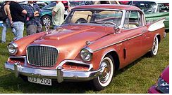

South Bend
Los Angeles
South Bend
Los Angeles
Z wikipedii, wolnej encyklopedii
Przejdź do nawigacji Przejdź do wyszukiwania
Studebaker Golden Hawk
Studebaker Golden Hawk 1957
Zaprezentowany listopad 1955
Okres produkcji 1955-1958
| Miejsce produkcji |
South Bend
Los Angeles
|
|---|
Poprzednik Studebaker President Speedster
Następca brak
Dane techniczne
Segment sportowy
Typy nadwozia 2-drzwiowy hardtop coupé
| Silnik |
V8
: 352 ci (5,8 1), 275 KM
|
|---|
Skrzynia biegów manualna / automatyczna
Napęd tylny